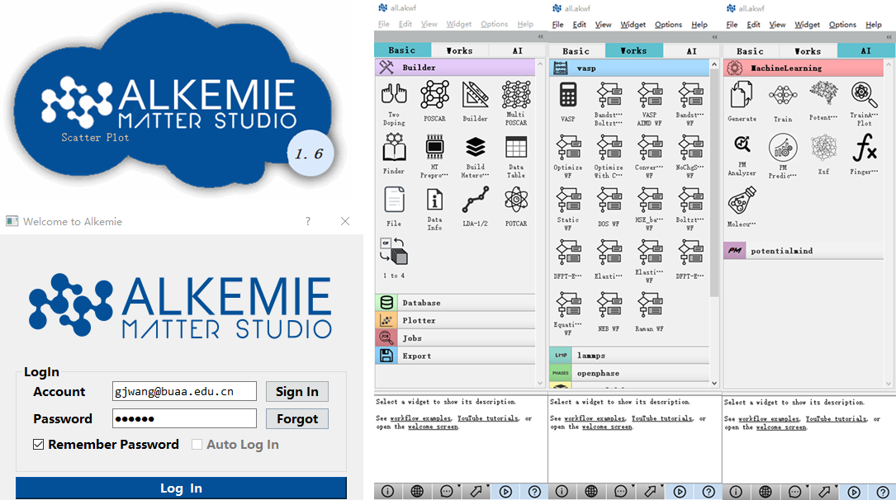

Welcome to User Manual of ALKEMIE Matter Studio¶
在未知材料化学成分和性能关系的情况下，具有某种特需功能的新材料往往需要经过漫长的试错和纠错过程， 并且经常无功而返。在过去几十年，随着计算能力和理论物理的发展，材料计算模拟在新材料设计中逐渐占据主导地位。如今， 随着数据驱动的材料研发时代的到来，为加速新材料的研发与设计，结合多类型材料数据库，数据挖掘和机器学习技术，发展高 通量自动流程材料集成计算算法及数据管理智能平台变得至关重要。
{kind=link}
ALKEMIE (Artificial Learning and Knowledge Enhanced Materials Informatics Engineering)是由 北京航空航天大学孙志梅教授团队于2017年基于python开源框架自主开发了一套高通量自动流程可视化计算和数据管理智能平台， 该平台包含 了适用于数据驱动的材料研发模式的三个核心方面：材料高通量自动计算模拟，材料数据库及数据管理和基于人工智能和机器学习的材料 数据挖掘。概括来说，ALKEMIE高通量计算模块可实现从建模、运行到数据分析，全程自动无人工干预；支持单用户不低于103量级的并 发高通量自动计算模拟；ALKEMIE多类型的材料数据库，通过数据库的高级接口（API）使得基于人工智能和机器学习的数据挖掘技术在 新材料设计与研发中可以得以快速的应用和实践。特别的，ALKEMIE自主开发了基于机器学习的跨尺度大规模分子动力学势函数的特色模 块。更重要的是，ALKEMIE设计了用户友好的可视化操作界使得工作流和数据流具有更强的透明性和可操作性。
ALKEMIE平台包含ALKEMIE Matter Studio（MS）、ALKEMIE Data Vault（DV）和ALKEMIE Potential Mind（PM）三部分。 其具有可视化的高通量自动流程可视化操作界面；从建模、运行到数据分析，全程自动无人工干预；支持单用户不低于1000量级的 并发运算； 针对典型算例可以实现单一尺度及跨尺度计算功能；拥有完整的18万条材料学数据库；可移植性、可扩展性强： 目前支持VASP, LAMMPS, QE等计算；适用于对第一性原理知识掌握程度从初级到专业的所有材料研究人员。
引用ALKEMIE软件¶
Wang G, Peng L, Li K, et al. ALKEMIE: An intelligent computational platform for accelerating
materials discovery and design[J]. Computational Materials Science, 186: 110064.
# Bib Tex
@article{wang186alkemie,
title={ALKEMIE: An intelligent computational platform for accelerating materials discovery and design},
author={Wang, Guanjie and Peng, Liyu and Li, Kaiqi and Zhu, Linggang and Zhou, Jian and Miao, Naihua and Sun, Zhimei},
journal={Computational Materials Science},
volume={186},
pages={110064},
publisher={Elsevier}
}
目录:
- 简介
- 申请试用
- 设计架构
- 客户端安装
- 高通量算例
- 高通量1000量级计算流程
- 动态蒙特卡洛
- 第一性原理与热力学Gibbs耦合
- 第一性原理与体模量耦合
- 居里温度计算
- 构建空位构型并进行第一性原理静态计算
- 构建相变材料的掺杂构型并进行第一性原理静态计算
- 构建相变材料的晶界构型并进行第一性原理静态计算
- 构建取代类型的原子构型并进行第一性原理静态计算
- 构建四面体和八面体间隙原子构型并进行第一性原理静态计算
- 通过Finder在18万数据库索引结构并可视化
- 高通量自动计算流程：第一性原理驰豫计算
- 第一性原理能带计算
- 第一性原理态密度计算
- 第一性原理HSE计算
- 第一性原理NEB计算
- Lammps弛豫计算
- 计算模块多任务工作状态查看
- 删除指定任务
- 改变高通量任务队列
- 能量体积自动分析
- 能量、体积、带隙自动格式化展示
- 能量，体积、带隙自动统计学分析
- 能量，体积、带隙自动散点图图分布
- 材料电学性质态密度分析
- 材料电学性质能带图分析
- OpenPhase 工作流
- Opencalphd 工作流
- 自动转化数据
- 自动训练模型
- 自动根据模型预测
- 自动链接大规模分子动力学ASE进行模拟
- 控件介绍
- 未来与展望